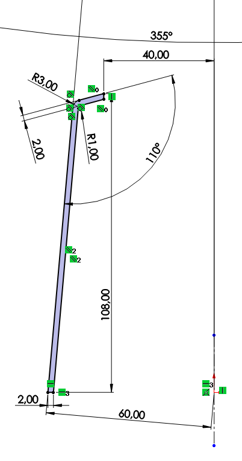
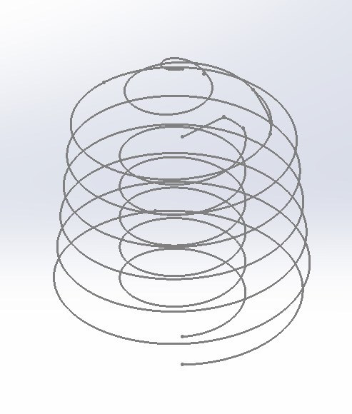
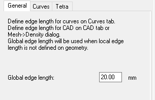
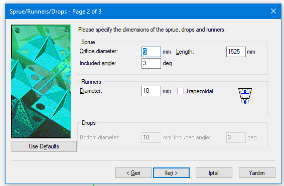
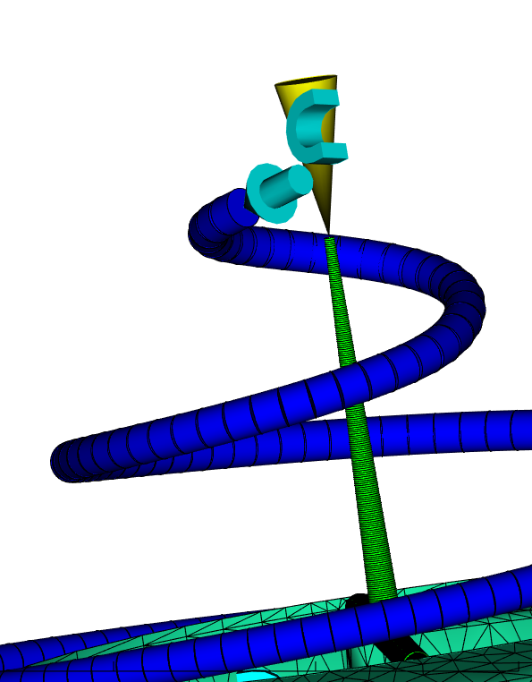
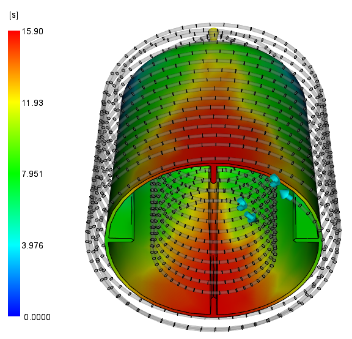
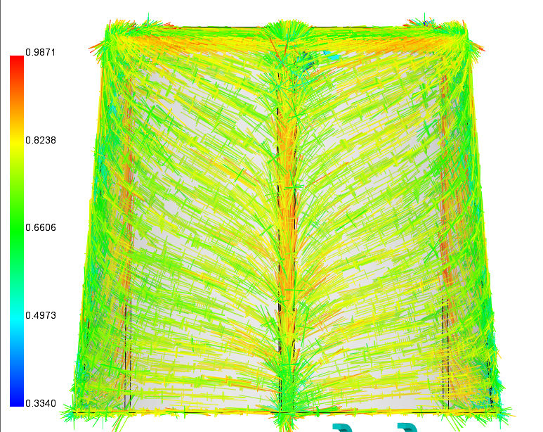
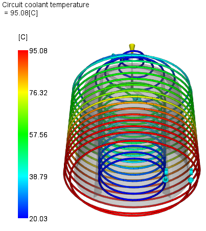
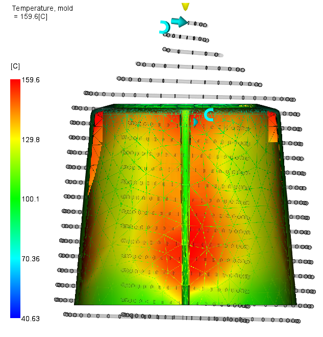
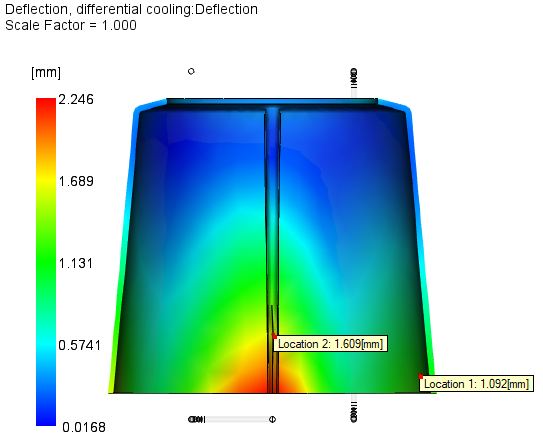

Plastik Enjeksiyon Kalıplarında Warping (Çarpılma) Azaltmak İçin Eklemeli İmalat Uygulamaları ile Geleneksel Çözümlerin Kıyaslanması
Yazar: Osman YILDIRIM (Öğrenci No: 22110081305) • KSÜ Makine Mühendisliği Bölümü
Özet ve Temel Bulgular
Bu çalışmada, plastik enjeksiyon kalıplarında eklemeli imalat (3D Printing) teknolojisinin sunduğu serbest form tasarım kabiliyetleri kullanılarak geliştirilen Helisel Conformal Cooling (Uyumlu Soğutma) kanalları ile sanayide yaygın olarak kullanılan Geleneksel (Baffle tipi) soğutma kanalları sayısal simülasyonlarla kıyaslanmıştır.
- Soğutma Kaynaklı Çarpılma (Differential Cooling): 2.246 mm'den 1.182 mm'ye düşürülerek %47.4 iyileşme sağlanmıştır.
- Kritik Mesh Düğümü 71077 (Taban Çeperi): Deformasyon miktarı %53.0 oranında azaltılmıştır.
- İç Duvar Sıcaklığı: Geleneksel kanallarda 199.2°C iken Helisel tasarımda 91.65°C'ye inerek 107.55°C daha homojen bir soğuma elde edilmiştir.
- Kalıp Maksimum Sıcaklığı: 269.1°C'den 159.6°C'ye düşürülmüştür.
1. Giriş
1.1 Eklemeli İmalat (Additive Manufacturing)
Eklemeli imalat, bir ürünün sanal 3 Boyutlu geometrik verilerinin yazıcı tarafından katman katman olacak şekilde eklenmesiyle yapılan bir imalat yöntemidir. İlk başta prototip üretimi için düşünülmüş ve kullanılmış daha sonraysa seri üretim için kullanılmaya başlanmıştır (Özsoy ve Duman, 2017). Formula 1 ve havacılık gibi hızlı ve fazla prototiplemenin olduğu alanlarda sıklıkla kullanılmaktadır. Günümüzde maliyetlerinin azalmasıyla kalıpçılık sektöründe geleneksel CNC delme operasyonlarıyla imkansız olan kavisli ve parçayı homojen saran soğutma kanallarının imalatında devrim yaratmıştır.
1.2 Plastik Enjeksiyon ve Soğuma Süresi
Isıtılmış termoplastik veya termoset plastik malzemelerin, yüksek basınçla bir kalıp boşluğuna enjekte edilmesi ve soğumasıyla kalıbın şeklini alarak parçaların üretildiği imalat yöntemidir. Hızlı ve ekonomik bir yöntemdir. Burada çevrim hızını belirleyen en kritik faktörlerden birisi soğuma süresidir. Kalıp içindeki soğumanın homojen gerçekleşmemesi, parçanın farklı bölgelerinde gerilme birikmelerine ve montaj hassasiyetini bozan boyutsal çarpılmalara (warping) yol açmaktadır.
1.3 Yöntem ve Amaç
Bu çalışmada, plastik enjeksiyon yöntemiyle üretimde kullanılan kalıpların soğutma kanalları incelenmiştir. Geleneksel yöntemler yerine eklemeli imalat kullanılarak, bu teknolojinin sunduğu esnek tasarım imkanları ile geliştirilen soğutma kanalı tasarımlarının, hem imalat süresini ne kadar kısaltabileceği hem de nihai üründe meydana gelen çarpılmayı (warping) ne kadar azaltabileceği gösterilmiştir.
2. Malzeme ve Ekipmanlar
Çalışmada kullanılan dijital modelleme ve analiz süreçleri için belirli malzeme ve yazılım tercihleri yapılmıştır:
| Parametre / Bileşen | Seçilen Malzeme / Yazılım | Teknik Açıklama ve Gerekçe |
|---|---|---|
| Plastik Malzeme | Victrex PEEK 450CA30 | %30 Karbon fiber takviyeli, yüksek sıcaklık ve mekanik dayanımlı polimer. Yüksek eriyik sıcaklığı (380-400°C) sebebiyle soğutma optimizasyonu çok kritiktir. |
| Kalıp Malzemesi | P20 Kalıp Çeliği (Steel P2) | Sanayide kolay erişilen, dengeli ısıl iletkenliğe ve yüksek mekanik işlenebilirliğe sahip kalıp çeliği standardı. |
| Soğutucu Akışkan | Su (H₂O) | Yüksek özgül ısı kapasitesi, mükemmel termal transfer kabiliyeti ve ekonomik uygulanabilirliği nedeniyle tercih edilmiştir. |
| Tasarım Yazılımı | SolidWorks 2022 CAD | Parça gövdesi, yolluklar, yolluk burçları ve iç-dış helisel kavisli soğutma kanallarının 3D parametrik modellemesi. |
| Analiz Yazılımı | Autodesk Moldflow Insight | Flow (akış ve dolum), Cool (termal gradyan) ve Warp (diferansiyel soğuma ve çarpılma) modülleriyle sayısal simülasyon. |
3. Tasarım ve Modelleme Süreci
Parçanın formundan dolayı hem dış çeperden hem de iç kısımdan çift taraflı soğutma gerekmektedir.


Geleneksel soğutma çözümünde iç çekirdek Baffle perdeleriyle, dış hatlar ise doğrusal CNC delikleriyle soğutulmuştur. Helisel tasarımda ise eklemeli imalatın sağladığı özgürlükle cidar mesafesi sabit tutulan 10 mm çapında dairesel kesitli çift helis kullanılmıştır.
4. Autodesk Moldflow Analiz Aşamaları
Analizin bilimsel doğruluğu için parça oryantasyonu, solid mesh parametreleri ve akış koşulları adım adım tanımlanmıştır:


Beam Elemanların Avantajı: Yolluk ve kanalların tanımlanmasında köşeli poligonlar yerine dairesel kesiti tam simüle eden Beam elemanlar kullanılmıştır. Bu durum hesaplamadaki geometrik yaklaşım hatalarını ortadan kaldırmıştır.

Reynolds Sayısının Eşitlenmesi: İki kanal tasarımını bilimsel olarak eşit şartlarda kıyaslamak için Reynolds sayısı (türbülans derecesi) her iki modelde de sabitlenmiştir. Process Settings'te kalıp açılma süresi 10 saniye, PEEK polimerinin ısıl dengelenmesi için toplam süre 100 saniye seçilmiş ve Use Mesh Aggregation çözücüsü aktif edilmiştir.
5. Simülasyon Sonuçları ve Kıyaslama
5.1 Flow (Akış & Dolum) Sonuçları
Parça kalıp boşluğunu 15.9 saniyede tamamen doldurmuştur. İki yönden besleme yapıldığı için akış cepheleri ortada karşılaşmış ve bu noktalarda kaynak çizgileri (Weld Lines) ile hava tuzakları (Air Traps) oluştuğu gözlemlenmiştir.


5.2 Cool (Termal Dağılım) Karşılaştırması
Geleneksel düz baffle kanallarında su kısa mesafede tahliye olduğu için az ısınırken, parça iç duvarlarında ciddi sıcaklık adacıkları oluşmaktadır. Helisel conformal kanallar ise ısıyı homojen bir şekilde tahliye etmiştir.

| Termal Kriter | Geleneksel Soğutma | Helisel Conformal Cooling | Net İyileşme / Değişim |
|---|---|---|---|
| İç Duvar Sıcaklığı | 199.2°C | 91.65°C | -%54 (-107.55°C) |
| Maksimum Kalıp Sıcaklığı | 269.1°C | 159.6°C | -%40.7 (-109.50°C) |
| Minimum Parça Sıcaklığı | 127.4°C | 37.26°C | Daha Hızlı Isı Transferi |
5.3 Warp (Çarpılma & Deformasyon) Karşılaştırması
Bir parçanın çarpılmasında et kalınlığı, gate yerleşimi ve moleküler oryantasyon gibi birçok etken rol oynar. Moldflow'un Differential Cooling analizi, yalnızca soğutmanın homojen olmamasından kaynaklı şekil değiştirmeyi yalıtarak iki kanal tasarımının asıl farkını ortaya koymuştur.


| Çarpılma / Deformasyon Parametresi | Geleneksel Soğutma | Helisel Conformal Cooling | İyileşme Oranı (%) |
|---|---|---|---|
| Soğutma Kaynaklı Çarpılma (Differential Cooling) | 2.246 mm | 1.182 mm | %47.4 İyileşme |
| Kritik Düğüm 71077 (Taban Çeperi) | Yüksek Şekil Değiştirme | Düşük Şekil Değiştirme | %53.0 İyileşme |
| Kritik Düğüm 3072 (Üst Kısım) | Orta Şekil Değiştirme | Düşük Şekil Değiştirme | %17.0 İyileşme |
| Toplam Çarpılma (Total Deflection) | 9.912 mm | 8.289 mm | %16.4 İyileşme |
6. Sonuç ve Mühendislik Değerlendirmesi
Bu çalışmada elde edilen temel çıkarımlar şunlardır:
- Çarpılmada %47.4 Net Düşüş: Eklemeli imalatla üretilen helisel conformal kanallar, soğutmadan kaynaklı çarpılmayı (warping) yarı yarıya (%47.4) azaltmıştır.
- Kritik Noktalarda Boyutsal Kararlılık: Taban çeperindeki kritik Node 71077 noktasında deformasyon %53.0 düşürülerek parçanın geometrik toleransları güvenceye alınmıştır.
- Yazılım Karşılaştırması: SolidWorks Plastics gibi temel seviye yazılımlar soğutma ve oryantasyon etkilerini ayrıştırmada yetersiz kalırken; Autodesk Moldflow Insight'ın Use Mesh Aggregation algoritması sayesinde diferansiyel soğuma etkileri net bir şekilde izole edilebilmiştir.
- Endüstriyel Uygulama: PEEK 450CA30 gibi yüksek maliyetli ve yüksek sıcaklık dayanımlı polimerlerde, döngü süresinin kısalması ve fire oranının düşmesi sayesinde eklemeli imalatla kalıp çekirdeği üretimi yüksek bir ekonomik geri dönüş sağlamaktadır.
Mühendislik Raporu Sonu
Bu araştırma ve simülasyon çalışması, Osman YILDIRIM tarafından Kahramanmaraş Sütçü İmam Üniversitesi Makine Mühendisliği Lisans Bitirme Projesi kapsamında gerçekleştirilmiştir.